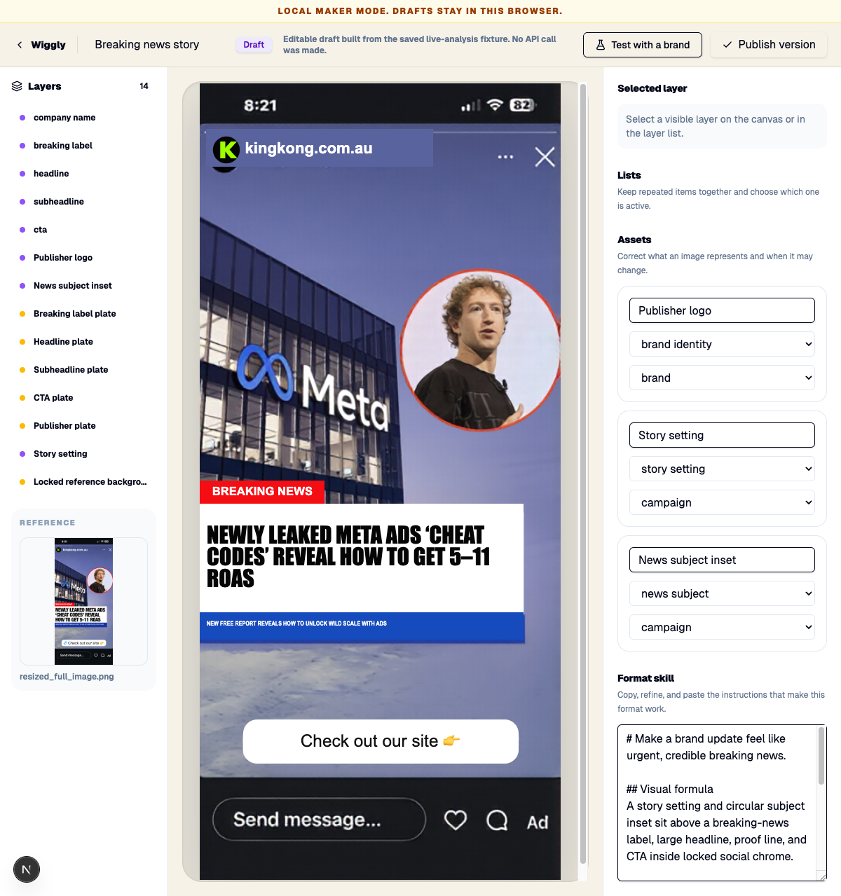
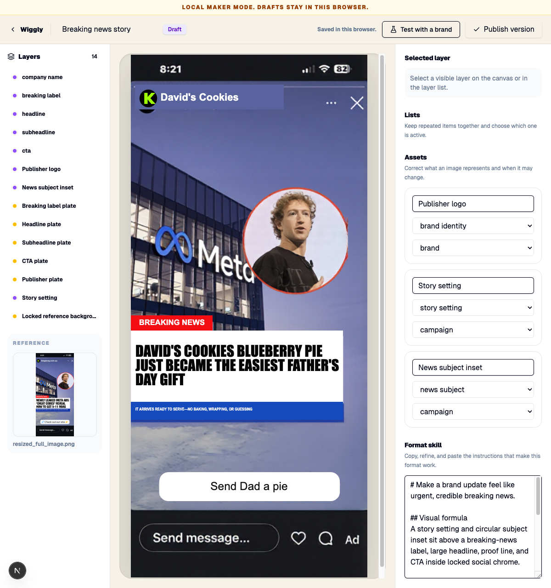
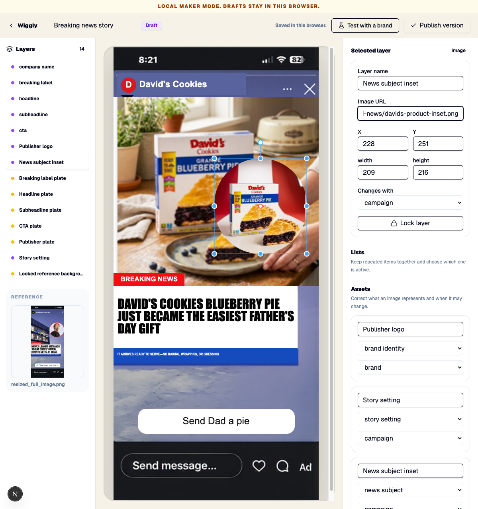

Hybrid reconstruction spike
One saved breaking-news post was reconstructed through Wiggly’s existing static-package scene and edited through the real /builder UI. No paid model call, new renderer, route, or scene contract was added.
2. Reconstructed Format

3. Inset moved

4. David’s Cookies remix

What the spike proved
- The setting, circular subject inset, publisher name and logo, label, headline, proof line, and CTA can remain separate editable layers.
- The inset can be dragged and the repaired sky stays clean underneath.
- Locked social chrome and reconstruction plates stay unchanged until explicitly unlocked.
- A Maker can turn the same Format into a coherent David’s Cookies post using existing local assets.
Limit found
The full-resolution phone screenshot exceeded localStorage during local-only Maker mode. The same reference worked at the 464×1024 analysis resolution. Production asset storage remains a separate problem; this spike did not add storage infrastructure.